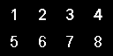

粒子系统 TextureSheetAnimationModule 的脚本接口。
通过此模块可以向粒子纹理添加动画。这通过创作翻页纹理来实现，这些纹理类似于下面这样：

每个编号区域都表示动画的一帧，必须在纹理中均匀分布。
在下面选择变量可查看脚本示例。您可能要在粒子系统上将此纹理与每个示例一起使用，以查看该模块的工作方式。
另请参阅：ParticleSystem、ParticleSystem.textureSheetAnimation。
| animation | 指定动画类型。 |
| cycleCount | 指定动画在粒子生命周期内的循环次数。 |
| enabled | 指定启用还是禁用 TextureSheetAnimationModule。 |
| fps | 控制动画的播放速度。 |
| frameOverTime | 曲线，用于控制要播放的纹理帧动画的帧。 |
| frameOverTimeMultiplier | 随时间变化的帧乘数。 |
| mode | 选择动画纹理信息是来自单个纹理上的帧网格，还是来自精灵对象的列表。 |
| numTilesX | 定义纹理在 x 轴上的平铺。 |
| numTilesY | 定义纹理在 y 轴上的平铺。 |
| rowIndex | 显式选择要使用的纹理帧行。当 ParticleSystem.TextureSheetAnimationModule.rowMode 设置为 Custom 时，系统使用此属性。 |
| rowMode | 选择粒子如何选择要使用的纹理帧动画行。 |
| speedRange | 指定粒子速度如何映射到动画帧。 |
| spriteCount | 精灵总数。 |
| startFrame | 为纹理帧动画定义随机初始帧。 |
| startFrameMultiplier | 起始帧乘数。 |
| timeMode | 选择系统回放是基于将曲线映射到每个粒子的生命周期，通过使用粒子速度，还是回放仅使用恒定的每秒帧数。 |
| uvChannelMask | 选择将接收纹理动画的 UV 通道。 |
| AddSprite | 添加新精灵。 |
| GetSprite | 获取指定索引处的精灵。 |
| RemoveSprite | 从数组给定索引处删除精灵。 |
| SetSprite | 设置给定索引处的精灵。 |